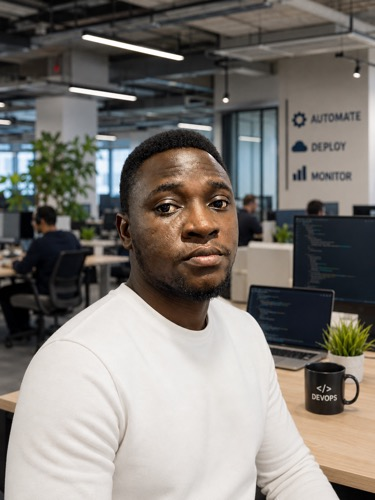

Six years running TechOps for a fintech platform: AWS, Terraform, and ECS blue/green deployments on one side, PCI-DSS compliance and network security on the other. 568 tickets shipped, zero shortcuts on uptime.

I joined TechOps handling VPN setups, workstation audits, and AD hygiene for a growing fintech team. Over six years that grew into owning the infrastructure it runs on: I designed the production architecture, containerized close to 120 services across Docker, ECS Fargate, and EKS, and built the CI/CD pipelines that promote them through dev, staging, and prod, plus the event-driven automation (image-update watchers, deployment triggers, alerting) that keeps the whole thing running without someone babysitting it.
The other half of the job is trust: PCI-DSS reviews of the Cardholder Data Environment, network segmentation, VPN-only access to every dashboard, and the SSL/certificate hygiene that keeps a lending platform compliant. I've logged 568 tickets across both sides of that work, 530 of them closed out.
QA's Maestro flow-authoring was mature, organized by squad, tagged, stability-gated, with a ci tag already defined as "the curated subset the pipeline runs on every PR" and a JUnit→Allure reporting script sitting ready. But no pipeline had ever been wired up to use any of it. Every run was still manual, on someone's machine.
ci tag; Android only had smoke/manual, so gating it the same way needed a decision with QA first.Scoped the two blocking decisions before writing any pipeline code, then piloted iOS first since it was already stability-gated: build the app → scripts/maestro-test.sh <env-file> ios --include-tags ci --format junit --output report.xml → scripts/allure-regroup.py to regroup results → publish as an Allure report grouped by platform · squad. Test-identity secrets (TEST_* / MAESTRO_*), previously only in 1Password, get provisioned as secured pipeline variables rather than checked-in config. Android extends the same pattern once QA agrees on its tag convention, documented as a handoff rather than blocking the iOS pilot on it.
Open to DevOps, SRE, and solution architecture conversations. Reach out on any of these.